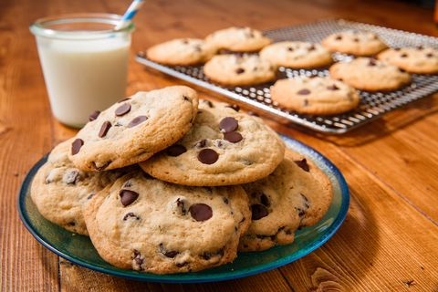

Home
Chocolate Chip Cookies!

Description
These classic chocolate chip cookies have crispy edges and a soft, chewy center. Filled with sweet chocolate chips, they offer a delightful treat for any time of the day.
Enjoy these freshly baked cookies with a cold glass of milk. They are a perfect dessert for parties or a cozy night at home.
Ingredients
- 2 cups all-purpose flour
- ½ tsp baking soda
- ½ cup melted butter
- 1 cup brown sugar
- 1 large egg
- 1 tsp vanilla extract
- 1 cup chocolate chips
- ½ tsp salt
Steps
- Preheat your oven to 350°F (175°C) and line a baking sheet with parchment paper.
- Mix the melted butter, brown sugar, egg, and vanilla extract in a large bowl.
- Add the flour, baking soda, and salt, stirring until a dough forms.
- Fold the chocolate chips gently into the cookie dough.
- Scoop small balls of dough onto the prepared baking sheet.
- Bake for 10 to 12 minutes until the edges are golden brown.